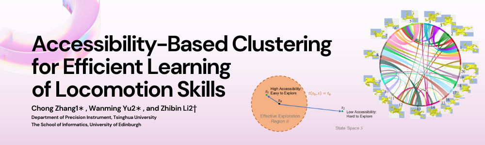
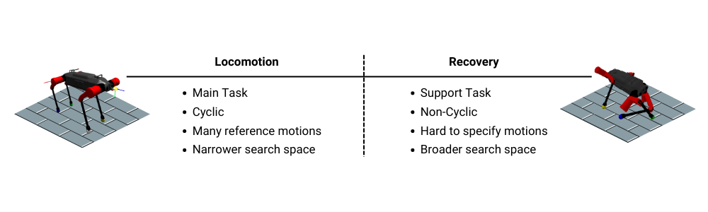
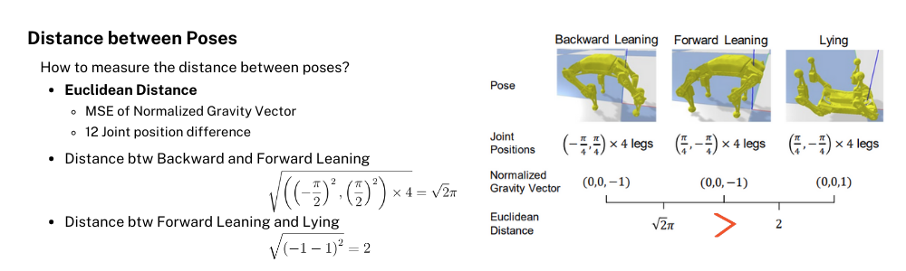
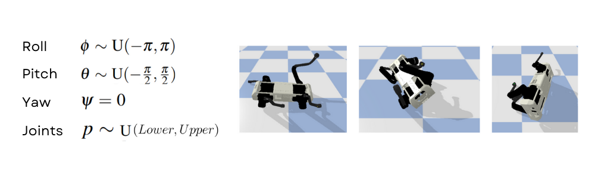
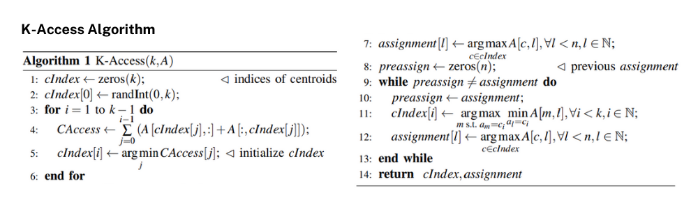
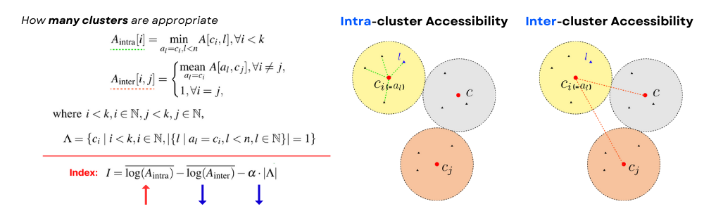
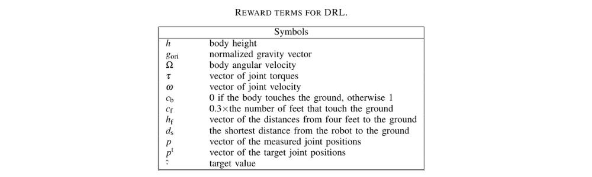
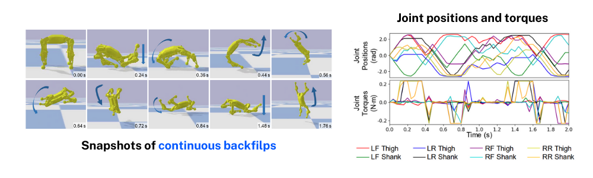

📃K-Accessibility for RL

이번 포스팅은 Accessibility-Based Clustering for Efficient Learning of Locomotion Skills 논문을 읽고 정리한 내용입니다. 강화학습으로 로봇 제어를 학습할 때 어떻게 효율적으로 initial state distribution을 탐색하도록 만들어 줄 수 있을까?라는 질문을 K-means++ 알고리즘과 유사한 K-Access라는 알고리즘을 고안하여 해결한 논문입니다. 해당 논문에서는 quadruped robot의 Recovery와 Backflip 모션 학습을 보여주었습니다.
Introduction
이 세상에는 많은 로봇들이 있습니다. 그 중 족형 로봇(legged-robots), 즉 다리 매커니즘을 이용하여 지면과의 상호작용을 하여 이동하는 로봇들은 바퀴형 이동 로봇(wheeled-robots)에 비해 바퀴로 가기 힘든 울퉁불퉁한 지형, 연속적이지 않은 지형 상에서 이동할 수 있다는 장점이 있습니다. 족형 로봇과 바퀴형 로봇 모두 이동을 기본 전제로 사람에게 유용한 다양한 task를 하는 것이 목적이기 때문에 족형 로봇의 이동을 보행(locomotion) task, 바퀴형 로봇의 이동을 주행(drive) task이라고 합니다.
족형 로봇은 대표적으로 사람과 같은 보행을 하는 2족 보행 로봇과 강아지와 같은 보행을 하는 4족 보행 로봇으로 나눠볼 수 있는데 그 중 2족 보행 로봇인 Digit과 관련한 재밌는 뉴스 클립이 하나 있어서 본격적으로 논문을 살펴보기 전에 보려고 합니다.
전후좌우 자유롭게 움직이고 제자리에서 돌거나 웅크릴 수 있는 유연성 … 한 마디로 고도의 기술 집합체라는 소린데, … 어째 점점 속도가 느려지는가 싶더니 다리가 풀리면서 쓰러지고 맙니다.
… 박람회 참가 전 여러 날에 거쳐 약 20시간의 라이브 테스트를 진행 … 99%의 성공률을 보였음에도 불구하고 또 사람들이 보는 앞에서 이런 사고가 …
뉴스에서 보신 것처럼 데모를 매우 오랜시간 준비하고 점검하였지만 예측하지 못한 변수로 인해 로봇이 넘어지는 모습을 볼 수 있습니다. 이미 잘 구성된 데모 환경에서도 미처 생각지 못한 일로 인해 로봇이 넘어지는데 실제 로봇이 상품이 된다면 로봇이 놓이게 되는 환경은 정말 다양해서 절대 넘어지지 않을 것이라는 보장을 하기에 어려울 것 입니다.
기본 전제라고 표현했듯이 이동은 로봇의 Main task라고 볼 수 있으며 걷는 모션을 생각해 봤을 때 일정한 주기로 같은 모션이 반복되어 진행(cyclic)되는 것을 파악할 수 있습니다. 또한 Locomotion은 오랜시간 동안 동물들의 모션과 같은 reference motion들을 통해 연구되어 오면서 수학적인 모델링이 잘 연구되어 있습니다. 마지막으로 Locomotion의 특성을 강화학습의 policy가 학습해야 하는 로봇의 joint 제어측면에서 search space로 파악해본다면, Narrow한 search space를 가지고 있다고 표현할 수 있습니다.

반면
Distance between poses
Initial state distrubutions

Motivation & Contribution




강화학습은 정말 매력적인 인공지능 학습법 중 하나라고 생각합니다.
2가지 Task, Recovery Task와 Backflip Task에 대해서 학습
Method
Overview

Sampling Static Poses

Estimating Accessibility Values
Clustering
K-Access Algorithm
Pseudo Code of K-Access


Reinforcement Learning Process

Reward Functions
Symbols of Reward Terms for DRL
Other Tasks - Backflip
해당 논문에서는 Recovery 뿐만 아니라 Locomotion 보다 더 다이나믹한 모션도 학습하는 것을 보여주기 위해 Backflip 학습도 K-Accessibility 알고리즘을 이용하여 학습을 진행하였습니다. (이전에 리뷰했던 WASABI 논문에서도 다이나믹한 모션 4가지 중 하나를 Backflip으로 학습 결과를 보여주었던 것과 같은 맥락으로 해당 모션 Task를 설정했다고 보시면 됩니다.)
Results
Recovery
- KA: Centroids of the obtained 43 clusters by K-Access
- KM: Centroids of the obtained 33 clusters by K-Means++ based on the generalized Dunn’s index ν43
- WKM: Centroids of the obtained 14 clusters by weighted KMeans++ based on ν43 (gravity vector weighted by 2)
- 9-Pose: Nine initial poses
- 1-Pose: One lying pose
- RND: Random static poses


Backflip


Conclusion
해당 논문에 대해서 좀 더 알아보고 싶으신 분들은 저자들이 공개한 Youtube 발표 영상도 확인해보시길 권장해드립니다.